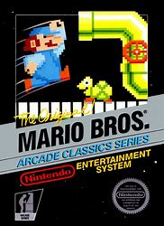
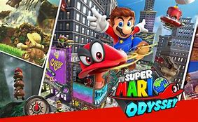

If you are a fan of Mario you've come to the right place
Mario did not actually start as a plumber. Originally he was a carpenter and had a different girlfriend named Pauline. Mario did not become a plumber till the relesae of Mario Bros (image below) in Jul 14, 1983.
Mario Oddessey is the latest installement in the Mario franchise. This game is a improvment over others in the series like Mario 64 and Mario Sunshine because when you collect the Moons (power source) you do not get booted out of the level and can keep playing. This was something that annoyed a lot of players in Mario 64 and Mario Sunshine.
